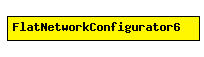

File: Network/AutoRouting/FlatNetworkConfigurator6.ned
C++ definition: click here
Configures IPv6 addresses and routing tables for a "flat" network, "flat" meaning that all hosts and routers will have the same network address and will only differ in the host part.
FIXME: add documentation!
See also: FlatNetworkConfigurator
The following diagram shows usage relationships between modules, networks and channels. Unresolved module (and channel) types are missing from the diagram. Click here to see the full picture.
| Name | Type | Description |
|---|---|---|
| moduleTypes | string | all module types to be considered part of the topology |
| nonIPModuleTypes | string | module types which don't need IP configuration (e.g. Ethernet hub, switch or bus) |
simple FlatNetworkConfigurator6 parameters: moduleTypes: string, // all module types to be considered part of the topology nonIPModuleTypes: string; // module types which don't need \IP configuration // (e.g. Ethernet hub, switch or bus) endsimple